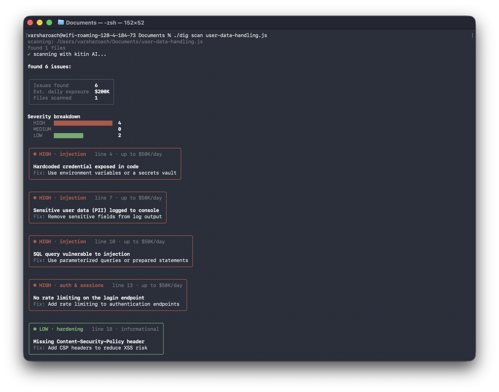
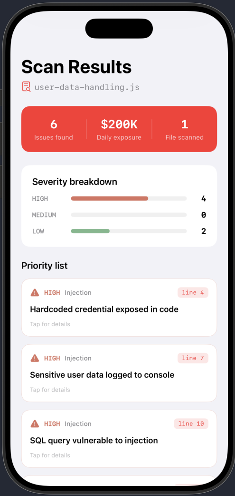

Kitin is an AI security tool that takes a different approach to code analysis. Instead of sending your codebase to a general-purpose LLM and hoping for accurate results, Kitin uses a multi-model system trained on a history of real cybersecurity exploits. That training gives it higher accuracy on the vulnerability patterns that actually show up in production code.

From the terminal, you point Kitin at a file or directory and it returns structured findings: severity level, category, the exact line, a plain-language explanation, and a suggested fix. Results also include an estimated daily exposure cost and a breakdown by severity so you can prioritize what to patch first.
In the example above, Kitin flags hardcoded credentials, sensitive data logged to the console, SQL injection, missing rate limiting on authentication endpoints, and missing Content-Security-Policy headers. Each finding is tagged by type (injection, auth & sessions, data exposure, hardening) rather than returned as free-form LLM text.

The same scan data is available through a mobile interface. The priority list surfaces high-severity issues first, with issue count, daily exposure estimate, and per-finding detail on tap. The goal is to make security review feel actionable: know what is wrong, how risky it is, and how to fix it, without wading through an unstructured model response.